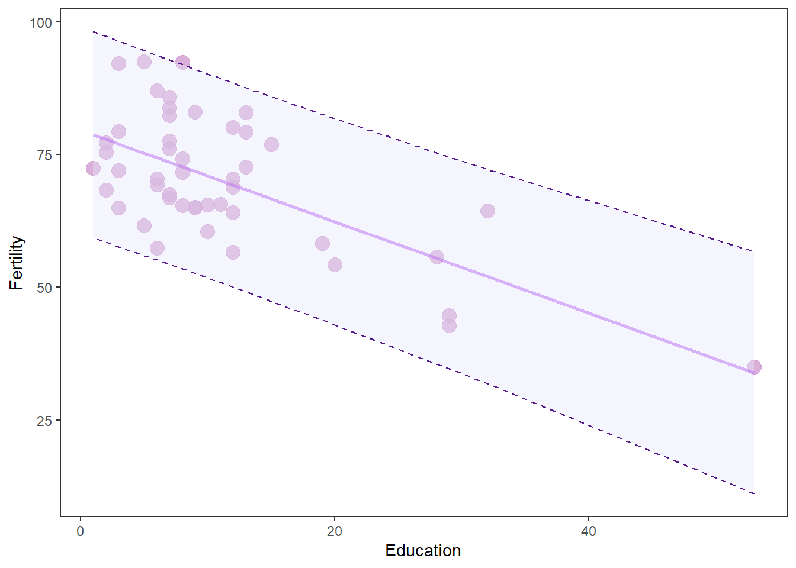

10.3 Linear regression
Compared to interpreting group effects from ANOVA, the interpretation of a single, continuous predictor in linear regression is pretty straightforward. Here, all we are doing is looking to use the equation for a line \(y = mx + b\) to predict the effects of one continuous variable on another. Most of us probably did this for the first time in middle school. But, if we look at the math in the same way that we did for ANOVA, it will make understanding ANCOVA a lot easier.
Let’s use the swiss data again for this like we did in Chapter 8. Remember that this data set compares fertility rates to a number of socio-economic indicators:
We’ll make a model to predict the effect of education level on fertility:
# Make the model and save it to a named object called 'swiss.mod'
swiss.mod <- lm(Fertility ~ Education, data = swiss)Have a look at the design matrix and you can see that R still includes a column for the intercept that is all 1, so this is the same as ANOVA. But, instead of having dummy variables in columns representing groups, we just have our observed values of Education
## (Intercept) Education
## Courtelary 1 12
## Delemont 1 9
## Franches-Mnt 1 5
## Moutier 1 7
## Neuveville 1 15
## Porrentruy 1 7Next, we can look at the coefficient estimates for swiss.mod. Remember that each of these coefficients corresponds to one and only one column in our design matrix X.
##
## Call:
## lm(formula = Fertility ~ Education, data = swiss)
##
## Residuals:
## Min 1Q Median 3Q Max
## -17.036 -6.711 -1.011 9.526 19.689
##
## Coefficients:
## Estimate Std. Error t value Pr(>|t|)
## (Intercept) 79.6101 2.1041 37.836 < 2e-16 ***
## Education -0.8624 0.1448 -5.954 3.66e-07 ***
## ---
## Signif. codes: 0 '***' 0.001 '**' 0.01 '*' 0.05 '.' 0.1 ' ' 1
##
## Residual standard error: 9.446 on 45 degrees of freedom
## Multiple R-squared: 0.4406, Adjusted R-squared: 0.4282
## F-statistic: 35.45 on 1 and 45 DF, p-value: 3.659e-0710.3.1 Prediction
As with the case of categorical explanatory variables, we are now interested in predicting the mean expected Fertility for any given value of Education based on our model coefficients. Recall from ANOVA that we can do this “by hand”:
betas <- swiss.mod$coefficients
X_pred <- as.matrix(model.matrix(swiss.mod))
# Multiply betas by dummy coded
# matrix using transpose of both
# These are your predictions
# for ctrl, trt1, and trt2
y_pred <- as.vector( t(betas) %*% t(X_pred) )
swiss_pred <- data.frame(swiss, y_pred)Or, we can use the built-in predict() function to get confidence intervals on our predictions, too! That’s a pain to do by hand every time, so we will use the predict() function from here out for linear regression!
Here I’ll ask R for "prediction" intervals. To avoid warnings about predicting from the same data to which the model was fit, we need to either pass the model part of swiss.mod to the function as new data or we need to simulate new data. As models become increasingly complex, it becomes increasingly complicated to simulate data appropriately. Therefore, if I am just interested in communicating my results, I do so with the model data.
# Make predictions using the model data
y_pred2 <- predict(swiss.mod,
newdata = swiss.mod$model,
interval = "prediction")
# Combine with original data
swiss_pred2 <- data.frame(swiss, y_pred2)Whichever way you do this, you’ll notice that we have a unique value of fit for every value of Education in the original data because fit is predicted as a continuous function of Education in this case:
## Fertility Agriculture Examination Education Catholic
## Courtelary 80.2 17.0 15 12 9.96
## Delemont 83.1 45.1 6 9 84.84
## Franches-Mnt 92.5 39.7 5 5 93.40
## Moutier 85.8 36.5 12 7 33.77
## Neuveville 76.9 43.5 17 15 5.16
## Porrentruy 76.1 35.3 9 7 90.57
## Infant.Mortality fit lwr upr
## Courtelary 22.2 69.26186 50.03294 88.49077
## Delemont 22.2 71.84891 52.61363 91.08418
## Franches-Mnt 20.2 75.29831 55.99275 94.60387
## Moutier 20.3 73.57361 54.31199 92.83522
## Neuveville 20.6 66.67480 47.41244 85.93717
## Porrentruy 26.6 73.57361 54.31199 92.83522We could also make predictions for specific values of Education by creating (simulating) new values of Education. Below, we make a sequence of new values for Education from the minimum to the maximum in 30 equal increments and then make predictions with that object instead of the model data.
new_ed <- data.frame(
Education = seq(from = min(swiss$Education),
to = max(swiss$Education),
length.out = 30
)
)Now make predictions across the range of observed data.
new_y_preds <- predict(swiss.mod, newdata = new_ed, interval = "prediction")
new_preds <- data.frame(new_ed, new_y_preds)Or, you could make a prediction for a single value. Let’s say I ask you to find the mean and 95% confidence interval for a specific value of Education. Usually we are interested in the maximum and minimum for communicating change in y across the range of x. To do this, you can just make some new data and print the predictions!
# Make a data frame containing only the max and min values for Education
point_ed = data.frame(Education = c(min(swiss$Education), max(swiss$Education)))
# Predict new values of y from the model
point_y_pred <- predict(swiss.mod, point_ed, interval = 'confidence')
# Put the predictions in a data frame with
# the min and max values of Education
point_preds <- data.frame(point_ed, point_y_pred)
# Now you can see your predictions
print(point_preds)## Education fit lwr upr
## 1 1 78.74771 74.72578 82.76963
## 2 53 33.90549 21.33635 46.47464Now, it is really easy for us to say:
Fertility rate was inversely related to Education (t = 5.95m, p < 0.05), and Education explained about 44% of the variation in Fertility rate. Across the range of observed education values Fertility decreased from a maximum of 78 (95% CI 75 - 83) at Education of 1 to a minimum of 34 (95% CI 21 - 46) at Education of 53 (Figure 1).
Where is Figure 1?
10.3.2 Plotting
Once we are happy with our predictions, we can go ahead and plot them against the raw data to show how our model fit the data. Here is the code that we used to do this in Chapter 7 but a little more purpley.
# Make a pretty plot showing raw data and model predictions
ggplot(swiss_pred2, aes(x = Education, y = Fertility)) +
geom_point(colour = 'plum3', fill = 'plum3', alpha = 0.75, size = 4) +
geom_line( aes(y = fit), size = 1, color='purple', alpha = .5) +
geom_ribbon(aes(ymin = lwr, ymax = upr),
color = 'purple4',
fill = 'lavender',
alpha = .4,
lty = 2,
lwd = .5) +
theme_bw() +
theme(legend.position = "none", panel.grid = element_blank())
Now that is a money figure that shows your raw data, the model predictions, and the uncertainty associated with both of these. That’s what we want to go for every time - with or without the purpleyness.
Multiple regression proceeds in much the same way. In most cases, it is easiest to make model predictions directly from the observed data because when we have multiple continuous X variables they are often correlated with one another. We will examine this in detail in Chapter 11 when we discuss model selection.